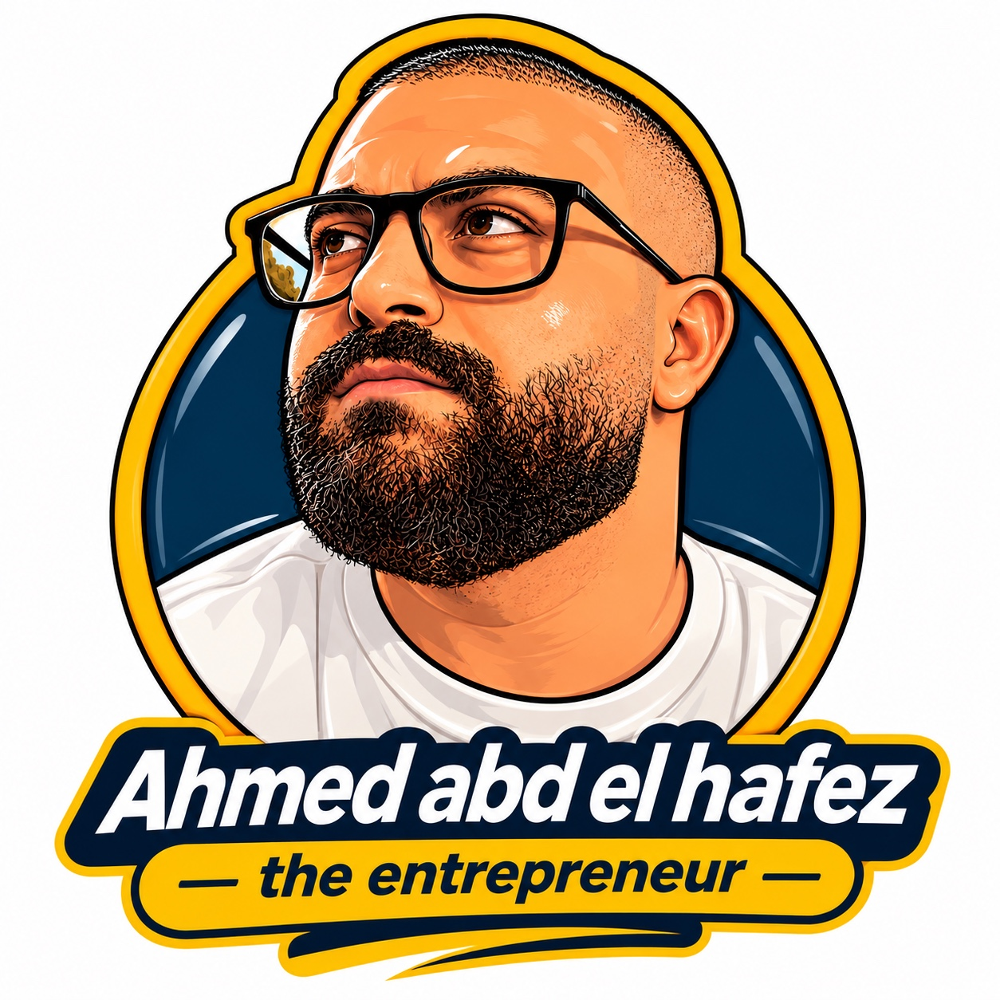

🎙️ من أرض المعركة
اختار باب... وافتح الحكاية!
90 سؤال جاهز3 أبواب
🚪 الأبواب السرية
كل ضيف يختار باب من 1 إلى 3، وبعد كشف السؤال يختار بابًا مختلفًا. ترتيب الأبواب بيتغير مع كل ضيف.
الضيف رقم 10 / 3 أبواب
كل ضيف له جوكر واحد. الأسئلة ما بتتكررش خلال اللايف، حتى لو اتخطيتها. التقدم محفوظ على نفس المتصفح. في حالة عدم وجود ضيف تاني، تقدر تغيّر نوع الجوكر من زر مخصص.